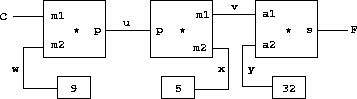

Computer programs are traditionally organized as one-directional computations, which perform operations on prespecified arguments to produce desired outputs. On the other hand, we often model systems in terms of relations among quantities. For example, a mathematical model of a mechanical structure might include the information that the deflection $d$ of a metal rod is related to the force $F$ on the rod, the length $L$ of the rod, the cross-sectional area $A$, and the elastic modulus $E$ via the equation \[ d A E = F L \] Such an equation is not one-directional. Given any four of the quantities, we can use it to compute the fifth. Yet translating the equation into a traditional computer language would force us to choose one of the quantities to be computed in terms of the other four. Thus, a function for computing the area $A$ could not be used to compute the deflection $d$, even though the computations of $A$ and $d$ arise from the same equation.[1]
In this section, we sketch the design of a language that enables us to work in terms of relations themselves. The primitive elements of the language are primitive constraints, which state that certain relations hold between quantities. For example, adder(a, b, c) specifies that the quantities $a$, $b$, and $c$ must be related by the equation $a+b=c$, multiplier(x, y, z) expresses the constraint $xy = z$, and constant(3.14, x) says that the value of $x$ must be 3.14.
Our language provides a means of combining primitive constraints in
order to express more complex relations. We combine constraints by
constructing
constraint networks, in which constraints are
joined by
connectors. A connector is an object that holds
a
value that may participate in one or more constraints. For example,
we know that the relationship between Fahrenheit and Celsius
temperatures is
\[ 9C = 5(F - 32) \]
Such a constraint can be thought of as a network consisting of primitive adder, multiplier, and constant constraints (figure ). In the figure, we see on the left a multiplier box with three terminals, labeled $m1$, $m2$, and $p$. These connect the multiplier to the rest of the network as follows: The $m1$ terminal is linked to a connector $C$, which will hold the Celsius temperature. The $m2$ terminal is linked to a connector $w$, which is also linked to a constant box that holds 9. The $p$ terminal, which the multiplier box constrains to be the product of $m1$ and $m2$, is linked to the $p$ terminal of another multiplier box, whose $m2$ is connected to a constant 5 and whose $m1$ is connected to one of the terms in a sum. 
Computation by such a network proceeds as follows: When a connector is given a value (by the user or by a constraint box to which it is linked), it awakens all of its associated constraints (except for the constraint that just awakened it) to inform them that it has a value. Each awakened constraint box then polls its connectors to see if there is enough information to determine a value for a connector. If so, the box sets that connector, which then awakens all of its associated constraints, and so on. For instance, in conversion between Celsius and Fahrenheit, $w$, $x$, and $y$ are immediately set by the constant boxes to 9, 5, and 32, respectively. The connectors awaken the multipliers and the adder, which determine that there is not enough information to proceed. If the user (or some other part of the network) sets $C$ to a value (say 25), the leftmost multiplier will be awakened, and it will set $u$ to $25\cdot 9=225$. Then $u$ awakens the second multiplier, which sets $v$ to 45, and $v$ awakens the adder, which sets $F$ to 77.
To use the constraint system to carry out the temperature computation outlined above, we first create two connectors, C and F, by calling the constructor make_connecter, and link C and F in an appropriate network: var C = make_connector(); var F = make_connector(); celsius_fahrenheit_converter(C, F); // ok
The function that creates the network is defined as follows: function celsius_fahrenheit_converter(c, f) { var u = make_connector(); var v = make_connector(); var w = make_connector(); var x = make_connector(); var y = make_connector(); multiplier(c, w, u); multiplier(v, x, u); adder(v, y, f); constant(9, w); constant(5, x); constant(32, y); return "ok"; }
This function creates the internal connectors u, v, w, x, and y, and links them as shown in Figure using the primitive constraint constructors adder, multiplier, and constant. Just as with the digital-circuit simulator of Section , expressing these combinations of primitive elements in terms of functions automatically provides our language with a means of abstraction for compound objects.
To watch the network in action, we can place probes on the connectors C and F, using a probe function similar to the one we used to monitor wires in Section . Placing a probe on a connector will cause a message to be printed whenever the connector is given a value: probe("Celsius Temp", C); probe("Fahrenheit Temp", F);
Next we set the value of C to 25. (The third argument to set_value tells C that this directive comes from the user.) set_value(C, 25, "user"); // Probe: Celsius Temp = 25 // Probe: Fahrenheit Temp = 77
The probe on C awakens and reports the value. C also propagates its value through the network as described above. This sets F to 77, which is reported by the probe on F.
Now we can try to set F to a new value, say 212: set_value(F, 212, "user"); // Error! Contradiction (77 212)
The connector complains that it has sensed a contradiction: Its value is 77, and someone is trying to set it to 212. If we really want to reuse the network with new values, we can tell C to forget its old value: forget_value(C, "user"); // Probe: Celsius Temp = ? // Probe: Fahrenheit Temp = ?
C finds that the user, who set its value originally, is now retracting that value, so C agrees to lose its value, as shown by the probe, and informs the rest of the network of this fact. This information eventually propagates to F, which now finds that it has no reason for continuing to believe that its own value is 77. Thus, F also gives up its value, as shown by the probe.
Now that F has no value, we are free to set it to 212: set_value(F, 212, "user"); // Probe: Fahrenheit Temp = 212 // Probe: Celsius Temp = 100
This new value, when propagated through the network, forces C to have a value of 100, and this is registered by the probe on C. Notice that the very same network is being used to compute C given F and to compute F given C. This nondirectionality of computation is the distinguishing feature of constraint-based systems.
The constraint system is implemented via procedural objects with local state, in a manner very similar to the digital-circuit simulator of Section . Although the primitive objects of the constraint system are somewhat more complex, the overall system is simpler, since there is no concern about agendas and logic delays.
The basic operations on connectors are the following:
The connectors communicate with the constraints by means of the functions inform_about_value, which tells the given constraint that the connector has a value, and inform_about_value, which tells the constraint that the connector has lost its value.
Adder constructs an adder constraint among summand connectors a1 and a2 and a sum connector. An adder is implemented as a function with local state (the function me below): function adder(a1, a2, sum) { function process_new_value() { if (has_value(a1) && has_value(a2)) { set_value(sum, get_value(a1) + get_value(a2), me); } else if (has_value(a1) && has_value(sum)) { set_value(a2, get_value(sum) - get_value(a1), me); } else if (has_value(a2) && has_value(sum)) { set_value(a1, get_value(sum) - get_value(a2), me); } } function process_forget_value() { forget_value(sum, me); forget_value(a1, me); forget_value(a2, me); process_new_value(); } function me(request) { if (request === "I-have-a-value") { process_new_value(); } else if (request === "I-lost-my-value") { process_forget_value(); } else { error("Unknown request -- ADDER " + request); } } connect(a1, me); connect(a2, me); connect(sum, me); return me; }
Adder connects the new adder to the designated connectors and
returns it as its value. The
function
me, which represents the
adder, acts as a dispatch to the local
functions. The following
syntax interfaces
(see footnote in
Section ) are used in conjunction with the
dispatch:
function inform_about_value(constraint) {
return constraint("I-have-a-value");
}
function inform_about_no_value(constraint) {
return constraint("I-lost-my-value");
}
The adder's local function process_new_value is called when the adder is informed that one of its connectors has a value. The adder first checks to see if both a1 and a2 have values. If so, it tells sum to set its value to the sum of the two addends. The informant argument to set_value is me, which is the adder object itself. If a1 and a2 do not both have values, then the adder checks to see if perhaps a1 and sum have values. If so, it sets a2 to the difference of these two. Finally, if a2 and sum have values, this gives the adder enough information to set a1. If the adder is told that one of its connectors has lost a value, it requests that all of its connectors now lose their values. (Only those values that were set by this adder are actually lost.) Then it runs process_new_value. The reason for this last step is that one or more connectors may still have a value (that is, a connector may have had a value that was not originally set by the adder), and these values may need to be propagated back through the adder.
A multiplier is very similar to an adder. It will set its product to 0 if either of the factors is 0, even if the other factor is not known. function multiplier(m1, m2, product) { function process_new_value() { if ((has_value(m1) && get_value(m1) === 0) || (has_value(m2) && get_value(m2) === 0)) { set_value(product, 0, me); } else if (has_value(m1) && has_value(m2)) { set_value(product, get_value(m1) * get_value(m2), me); } else if (has_value(product) && has_value(m1)) { set_value(m2, get_value(product) / get_value(m1), me); } else if (has_value(product) && has_value(m2)) { set_value(m1, get_value(product) / get_value(m2), me); } } function process_forget_value() { forget_value(product, me); forget_value(m1, me); forget_value(m2, me); process_new_value(); } function me(request) { if (request === "I-have-a-value") { process_new_value(); } else if (request === "I-lost-my-value") { process_forget_value(); } else { error("Unknown request -- MULTIPLIER " + request); } } connect(m1, me); connect(m2, me); connect(product, me); return me; }
A constant constructor simply sets the value of the designated connector. Any I-have-a-value or I-lost-my-value message sent to the constant box will produce an error. function constant(value, connecter) { function me(request) { error("Unknown request -- CONSTANT " + request); } connect(connecter, me); set_value(connecter, value, me); return me; }
Finally, a probe prints a message about the setting or unsetting of the designated connector: function probe(name, connecter) { function print_probe(value) { display("Probe: " + name + " = " + value); } function process_new_value() { print_probe(get_value(connecter)); } function process_forget_value() { print_probe("?"); } function me(request) { if (request === "I-have-a-value") { process_new_value(); } else if (request === "I-lost-my-value") { process_forget_value(); } else { error("Unknown request -- PROBE " + request); } } connect(connecter, me); return me; }
A connector is represented as a procedural object with local state variables value, the current value of the connector; informant, the object that set the connector's value; and constraints, a list of the constraints in which the connector participates. function make_connector() { var value = false; var informant = false; var constraints = []; function set_my_value(newval, setter) { if (!has_value(me)) { value = newval; informant = setter; for_each_except(setter, inform_about_value, constraints); } else if (value !== newval) { error("Contradiction " + "(" + value + ", " + newval + ")"); } else { return "ignored"; } } function forget_my_value(retractor) { if (retractor === informant) { informant = false; for_each_except(retractor, inform_about_no_value, constraints); } else { return "ignored"; } } function connect(new_contraint) { if (is_empty_list(member(new_contraint, constraints))) { constraints = pair(new_contraint, constraints); } if (has_value(me)) { inform_about_value(new_contraint); } return "done"; } function me(request) { if (request === "has_value") { return informant !== false; } else if (request === "value") { return value; } else if (request === "set_value") { return set_my_value; } else if (request === "forget") { return forget_my_value; } else if (request === "connect") { return connect; } else { error("Unknown operation -- CONNECTER " + request); } } return me; }
The connector's local function set_my_value is called when there is a request to set the connector's value. If the connector does not currently have a value, it will set its value and remember as informant the constraint that requested the value to be set.[2] Then the connector will notify all of its participating constraints except the constraint that requested the value to be set. This is accomplished using the following iterator, which applies a designated function to all items in a list except a given one: function for_each_except(exception, procedure, list) { function loop(items) { if (is_empty_list(items)) { return "done"; } else if (head(items) === exception) { return loop(tail(items)); } else { procedure(head(items)); return loop(tail(items)); } } return loop(list); }
If a connector is asked to forget its value, it runs the local function forget_my_value, which first checks to make sure that the request is coming from the same object that set the value originally. If so, the connector informs its associated constraints about the loss of the value.
The local function connect adds the designated new constraint to the list of constraints if it is not already in that list. Then, if the connector has a value, it informs the new constraint of this fact.
The connector's function me serves as a dispatch to the other internal functions and also represents the connector as an object. The following functions provide a syntax interface for the dispatch: function has_value(connecter) { return connecter("has_value"); } function get_value(connecter) { return connecter("value"); } function set_value(connecter, new_value, informant) { return (connecter("set_value"))(new_value, informant); } function forget_value(connecter, retractor) { return (connecter("forget"))(retractor); } function connect(connecter, new_contraint) { return (connecter("connect"))(new_contraint); }
constraintversions of the arithmetic operations. For example, cplus takes two connectors as arguments and returns a connector that is related to these by an adder constraint: function cplus(x, y) { var z = make_connecter(); adder(x, y, z); return z; } Define analogous functions cminus, cmul, cdiv, and cv (constant value) that enable us to define compound constraints as in the converter example above.[3]
imperative style,using functions that set the values of designated vector arguments but do not themselves return vectors as values: v_sum('a', 'b', temp1); v_sum('c', 'd', temp2); v_prod(temp1, temp2, answer); Alternatively, we could deal with expressions, using functions that return vectors as values, and thus avoid explicitly mentioning temp1 and temp2: var answer = v_prod(v_sum('a', 'b'), v_sum('c', 'd')); Since JavaScript allows us to return compound objects as values of functions, we can transform our imperative-style constraint language into an expression-oriented style as shown in this exercise. In languages that are impoverished in handling compound objects, such as Algol, Basic, and Pascal (unless one explicitly uses Pascal pointer variables), one is usually stuck with the imperative style when manipulating compound objects. Given the advantage of the expression-oriented format, one might ask if there is any reason to have implemented the system in imperative style, as we did in this section. One reason is that the non-expression-oriented constraint language provides a handle on constraint objects (e.g., the value of the adder function) as well as on connector objects. This is useful if we wish to extend the system with new operations that communicate with constraints directly rather than only indirectly via operations on connectors. Although it is easy to implement the expression-oriented style in terms of the imperative implementation, it is very difficult to do the converse.